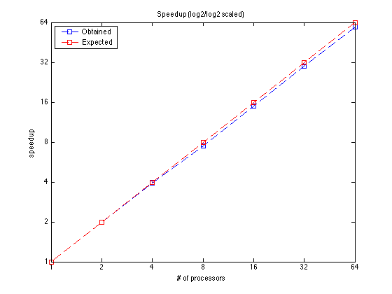
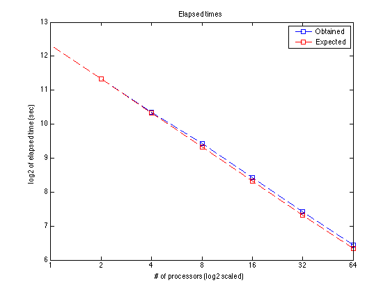
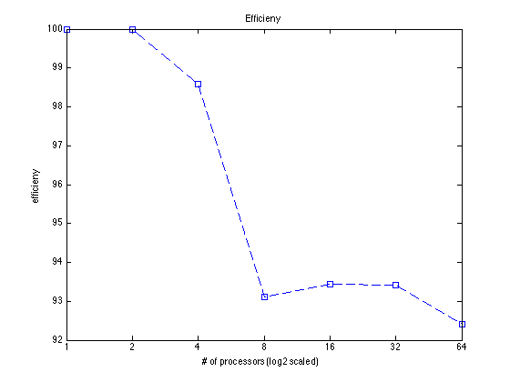

TSCU test suite: 08
This test shows how to use the parallel processing capability of TSCU by using the MATLABPool parameter. In order to use this feature, you should have MATLAB parallel programming toolbox and of course a parallel processing facility.
- Author : Huseyin Kaya
- Website: http://timewarping.org
- Sources: https://github.com/hkayabilisim/TSCU
Contents
Initialization
As always, I begin with clearing everything to stay out of any nonsense.
clear all close all clc
Loading data
I used one of the UCR datasets which you should obtain from UCR time series repository. I choose a medium size so that it doesn't take too much time nor too quick. If you choose a too small dataset, you can not observe the advantage of parallel processing.
trn=load('../../UCR/DiatomSizeReduction/DiatomSizeReduction_TRAIN'); tst=load('../../UCR/DiatomSizeReduction/DiatomSizeReduction_TEST');
Running in parallel
In order to use parallel processing, you have to have MATLAB parallel toolbox which I have in Istanbul Technical University. I have also access to High Performance Computing Center (UHEM) of the same university.
UHEM provides a couple of parallel processing environments. I choose 'karadeniz' for its availibilty for the time being. In order to submit jobs, they provides LSF for which I created several different MATLAB pools for different number of processors.
Then I run the program for difference number of processor. The karadeniz_XX is the name of the pool I defined in the MATLAB parallel toolbox.
tscu(trn,tst,'Alignment','SAGA','MATLABPool','karadeniz_64'); tscu(trn,tst,'Alignment','SAGA','MATLABPool','karadeniz_32'); tscu(trn,tst,'Alignment','SAGA','MATLABPool','karadeniz_16'); tscu(trn,tst,'Alignment','SAGA','MATLABPool','karadeniz_8'); tscu(trn,tst,'Alignment','SAGA','MATLABPool','karadeniz_4'); tscu(trn,tst,'Alignment','SAGA','MATLABPool','karadeniz_2');
Measuring the elapsed time
After running for 64,32,16,8,4 and 2 processors. I recorded the classification times for each run. I also included the time for single processor. Here I manually recorded the times since we don't have many runs.
nps = [1 2 4 8 16 32 64]; times = [5146.74 2573.37 1305.21 690.90 344.25 172.19 87.03];
Speed-up and efficieny
By using the elapsed times, it is easy to calculate the speed-up and efficieny.
speedups = times(1)./times; exptimes = times(1)*ones(1,length(nps))./nps; obttimes = times; efficieny = speedups./nps;
Speedup
I plot the speed-up graphic in log scale. In order to create nicely cropped PDF exports, I use export_fig utility.
addpath('lib/export_fig'); figure plot(log2(nps),log2(speedups),'--bs') hold on plot(log2(nps),log2(nps),'--rs') legend('Obtained','Expected','Location','NorthWest'); xlabel('# of processors'); ylabel('speedup') title('Speedup (log2/log2 scaled)'); set(gca,'XTickLabel',nps); set(gca,'YTickLabel',nps); export_fig('-pdf','-transparent','tscu_test08_speedup.pdf');
Elapsed Times
This is the elapsed times determined by TCSU. It is displayed as Classification time (sec).
figure plot(log2(nps),log2(obttimes),'--bs') hold on plot(log2(nps),log2(exptimes),'--rs') legend('Obtained','Expected','Location','NorthEast'); xlabel('# of processors (log2 scaled)'); ylabel('log2 of elapsed time (sec)') title('Elapsed times'); set(gca,'XTickLabel',nps); export_fig('-pdf','-transparent','tscu_test08_elapsed.pdf');
Efficiency
Efficieny is obtained from speed-up.
figure plot(log2(nps),100*efficieny,'--bs') xlabel('# of processors (log2 scaled)'); ylabel('efficieny') title('Efficieny'); set(gca,'XTickLabel',nps); export_fig('-pdf','-transparent','tscu_test08_efficiency.pdf');